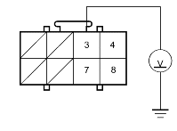

- Erase the DTC memory (see page 23-38).
- Turn the ignition switch ON (II), and check that the SRS indicator light comes on for about 6 seconds and then goes off.
Does the SRS indicator light stay on?
YES - Go to step 3.
NO - Intermittent failure, system is OK at this time. Go to Troubleshooting Intermittent Failures (see page 23-38).
- Make sure nothing is sitting on the front passenger's seat.
- Turn the ignition switch ON (II), and check that the side airbag indicator light comes on.
Does the side airbag indicator light come on?
YES - Go to step 5.
NO - Go to step 6.
- Make sure the side airbag indicator light comes on for 5 seconds and then goes off.
Does the side airbag indicator light go off?
YES - Faulty OPDS unit or SRS unit; replace the OPDS unit. If the problem is still present, replace the SRS unit. 
NO - Go to step 36.
- Turn the ignition switch OFF.
- Check the No. 19 (7.5A) fuse in the under-dash fuse/relay box.
Is the fuse OK?
YES - Go to step 8.
NO - Short to ground in the No. 19 (7.5A) fuse circuit.
- Check for a blown side airbag indicator light.
Is the side airbag indicator light OK?
YES - Go to step 9.
NO - Blown side airbag indicator; replace the gauge assembly.
- Disconnect the O1i connector (A) from the OPDS unit (B).

- Turn the ignition switch ON (II).
- Check for voltage between the No. 3 terminal of the O1i connector and body ground. There should be battery voltage.
O1i CONNECTOR

Wire side of female terminals
Is there battery voltage?
YES - Go to step 12.
NO - Go to step 24.